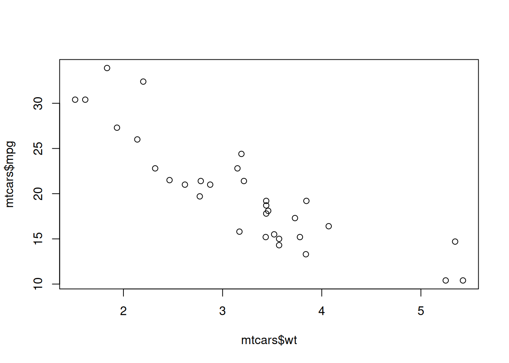

du code R, encapsulé dans des cellules de codes appelées « chunks »
et le résultat : tableaux, graphiques, valeurs calculées
R Markdown permet de produire un document reproductible en HTML, PDF ou Word, qui inclut à la fois le code de production, les résultats obtenus avec ce programme et du texte pour commenter la méthode et les résultats. A la création du document .Rmd, vous pouvez choisir votre format de document : HTML, Word, PDF.
Installation et création d’un premier document
Installer le package : install.packages(“rmarkdown”)
Créer un .Rmd dans RStudio : File → New File → R Markdown…
Du texte en Markdown
Le texte peut être mis en forme avec les commandes suivantes :
Titres : #, ##, ###, plus il y a d’#, plus le titre est petit
mpg cyl disp hp
Min. :10.40 Min. :4.000 Min. : 71.1 Min. : 52.0
1st Qu.:15.43 1st Qu.:4.000 1st Qu.:120.8 1st Qu.: 96.5
Median :19.20 Median :6.000 Median :196.3 Median :123.0
Mean :20.09 Mean :6.188 Mean :230.7 Mean :146.7
3rd Qu.:22.80 3rd Qu.:8.000 3rd Qu.:326.0 3rd Qu.:180.0
Max. :33.90 Max. :8.000 Max. :472.0 Max. :335.0
drat wt qsec vs
Min. :2.760 Min. :1.513 Min. :14.50 Min. :0.0000
1st Qu.:3.080 1st Qu.:2.581 1st Qu.:16.89 1st Qu.:0.0000
Median :3.695 Median :3.325 Median :17.71 Median :0.0000
Mean :3.597 Mean :3.217 Mean :17.85 Mean :0.4375
3rd Qu.:3.920 3rd Qu.:3.610 3rd Qu.:18.90 3rd Qu.:1.0000
Max. :4.930 Max. :5.424 Max. :22.90 Max. :1.0000
am gear carb
Min. :0.0000 Min. :3.000 Min. :1.000
1st Qu.:0.0000 1st Qu.:3.000 1st Qu.:2.000
Median :0.0000 Median :4.000 Median :2.000
Mean :0.4062 Mean :3.688 Mean :2.812
3rd Qu.:1.0000 3rd Qu.:4.000 3rd Qu.:4.000
Max. :1.0000 Max. :5.000 Max. :8.000
Dans un chunk, vous pouvez contrôler :
L’affichage du code dans le document : echo = TRUE
L’exécution du code au moment de « rendre » le document (voir plus bas) : eval = TRUE. Si eval = FALSE, le code ne sera pas exécuté, mais il pourra s’afficher si echo = TRUE.
L’affichage des warnings associés aux fonctions de la cellule : warning = FALSE
Les formats des résultats, par exemple la taille du graphique produit par la cellule : fig.width=7, fig.height=4 Exemple :
plot(mtcars$wt, mtcars$mpg)

Pour tester le code pendant la rédaction du document .Rmd, l’interface RStudio permet d’exécuter une seule cellule, ou plusieurs cellules à la suite :
Obtention du rendu
Pour visualer votre document, utilisez le bouton Knit de Rstudio. Au moment où vous appelez knit, l’ensemble des cellules de code pour lesquelles l’option eval est fixée à TRUE sont exécutées.